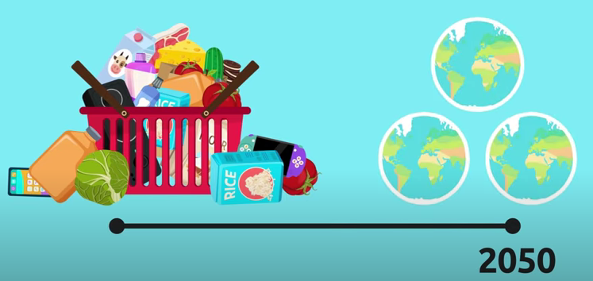
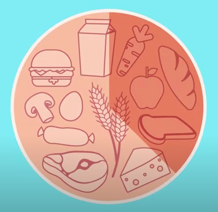

- About SDGs
- What is goal number 12?
- What can we do?
What is SDGs?
The Sustainable Development Goals (SDGs) aim to transform our world. They are a call to action to end poverty and inequality, protect the planet, and ensure that all people enjoy health, justice and prosperity. It is critical that no one is left behind.

In this webpage, I will introduce SDGs Goal number 12.
Responsible Consumption And Production.
What is goal number 12?
SDGs Goal number 12 is Responsible Consumption And Production.
What does "Responsible Consumption And Production" means? It means that you have to take responsibility what you made and what you bought. You can't just throw away the things that you already used.You have to think if we can reuse, recycle or reduce.
Watch this video to understand more (・∀・) ⇩
Let's understand what is happening right now.
Let's understand what is happening right now.
If we continue to consume at the current uncontrolled rate, by the year 2050, we will need 3 times the natural resources available on the earth!
Every year, even though hunger is one of the biggest problem in the world, 1/3 of all food is wasted...
Did you know that between 1990 and 2020 Co2 and other ammition increased by 50%?
This is why it is important to use sustainable and renuable energy sources. And to promote responsible consoptions of both the energy and the resources the earth gives us. Some of the international comunities goals to solve this problem are to cut food waste in half, promote enviromentaly friendly waste management and reduce the use of fossil fuels such as coals and oils.
What can we do as a Global Citizen?
- We can buy seasonal and local food
- They are fresher and much more respectful for the planet. And you will be supporting local buisness.
- Buy and sell second-hand product whenever you can.
- Choose reuseable products.
- Use an eco-bag for shopping, a reusable water bottle or a cup to reduce your plastic waste.We can also use energy saving light bulbs.We will be able to save money on the electricity bill too!
- We must be very carefull to rycycle correctly
- Avoid wasting Water
- Avoid wasting food
- We can buy seasonal and local food
If you want to see and understand more about SDGs, search "Margreet De Heer⇩"
Credit by -
🌸Made by Akari Egashira - Year8 Sakura🌸